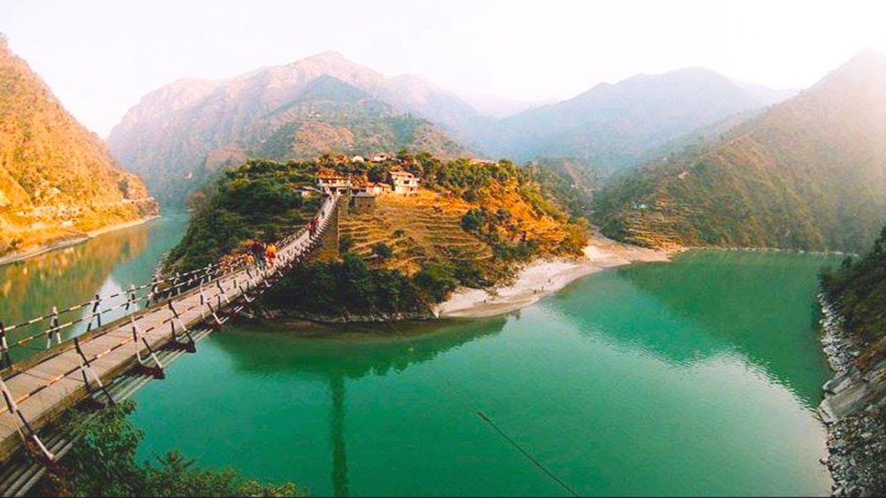

We offer you a wide range of beautiful and adventurous places of the world.The countries will be travelled legally with the permission the government of that region or country.The places of our country are:-
- Holidays
- Religous Tours
- Picnic Package
- Film Shooting
- School Tour
- Honeymoon Tour
- and many more.
We also take care of your safety with easy steps to register for trips.We make you stay in luxury hotels,travel in luxury buses, instruments for adventure such as tracking sets, camera,etc.
A lot to explore.
Tourist Information and Assistance, a free service that provides tourist information for domestic and foreign travelers, the information covers destinations, attractions, recommended routes and licensed tourism companies in India. It also provides assistance on various procedures or where tourists have problems of various kinds.

Visitor centers used to provide fairly basic information about the place, corporation or event they are celebrating, acting more as the entry way to a place. The role of the visitor center has been rapidly evolving over the past 10 years to become more of an experience and to tell the story of the place or brand it represents. Many have become destinations and experiences in their own right.
Your Satisfaction Is Our Success.
THANKYOU